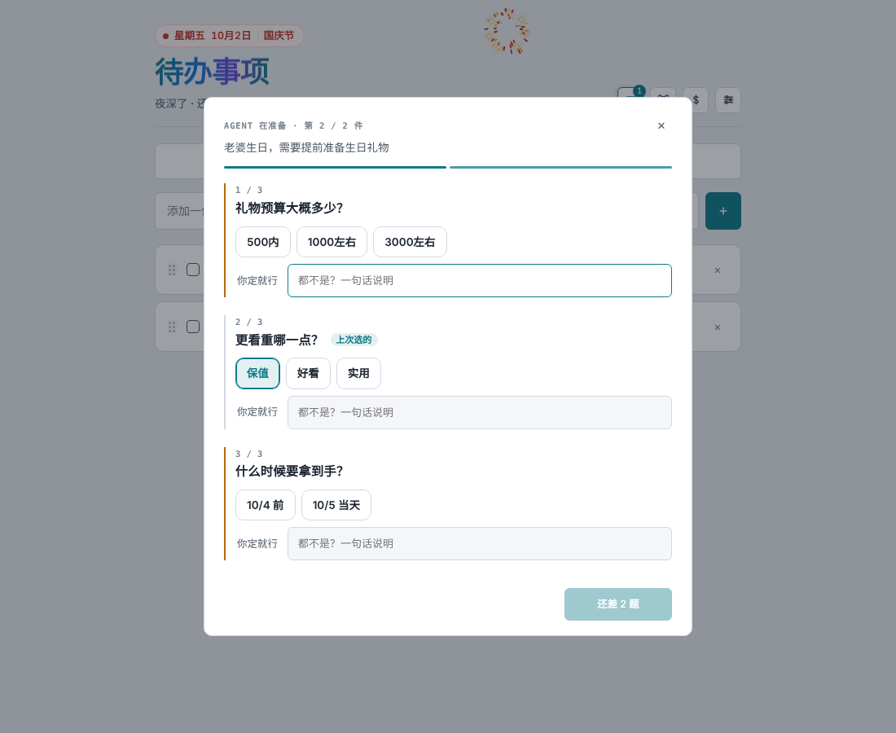
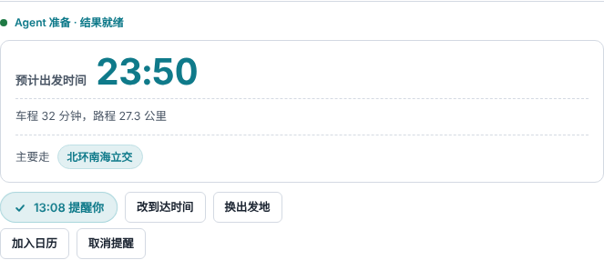
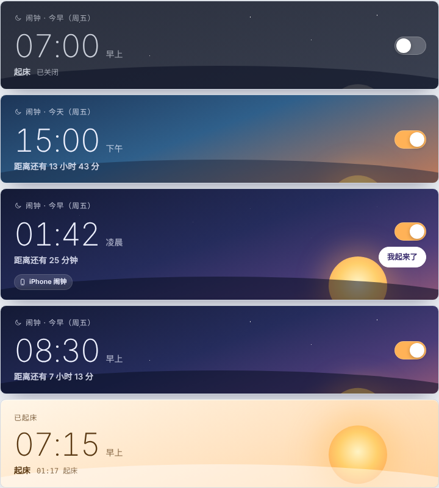

个人待办智能助手
运行在 Windows 电脑上的个人待办与生活决策助手：记下一件事，它帮你把准备工作做好。
个人自用工具 · 非商业运营
它能做什么
记录待办
按天整理待办事项，支持思考笔记、附件和会议纪要。
问答理解需求
通过几道选择题了解你的要求，一页答完，不反复打扰。
结合习惯给建议
参考你以往的选择，在挑礼物、选餐厅等场景给出建议，你这次说的条件优先。
出行与提醒
根据路况估算出发时间，到点提醒；一句话设置起床闹钟。
购物参考
确定要买某件商品后，汇总同款在不同店铺的到手价格、店铺类型和预计送达时间，整理成几个可选方案。
由你决定
助手只整理信息，下单由你自己点击跳转到商品页面完成。
界面预览

需求问答：同一件事的问题放在一页，上次的选择会自动带上。

出行规划：按路况估算出发时间，可一键开启出发提醒。

闹钟：一句话设置，卡片显示距离响铃还有多久。
购物参考如何工作
你在待办里确定要买的商品（例如在礼物建议中选中一项）。
助手按商品名称查询公开的商品信息，只保留同一款商品，排除配件和明显不同的规格。
结合你的预算、需要到手的日期和用途（自用或送礼），整理出几个可选方案，并说明各自的特点。
你点击方案，跳转到对应商品页面自行下单；助手不代为下单、不接触支付。
基本信息
运行环境
Windows 10 / 11 个人电脑，本地运行
使用者
开发者本人及家人
数据存放
待办内容保存在使用者自己的电脑上，不上传到第三方服务器
商品信息来源
各电商联盟开放平台提供的公开商品数据接口